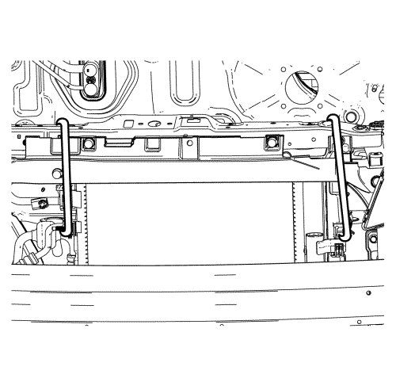
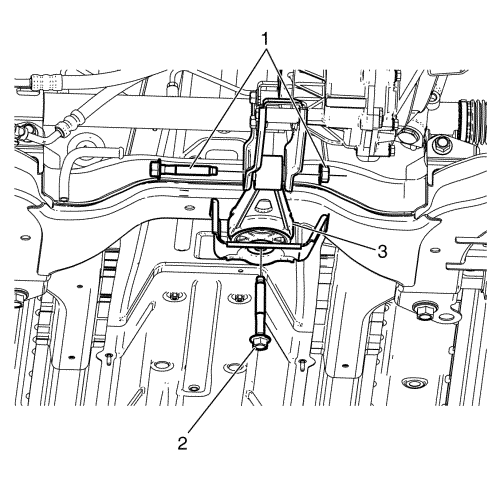
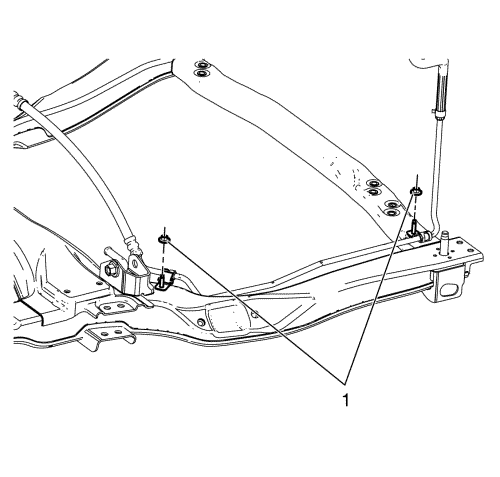
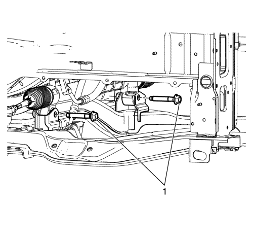
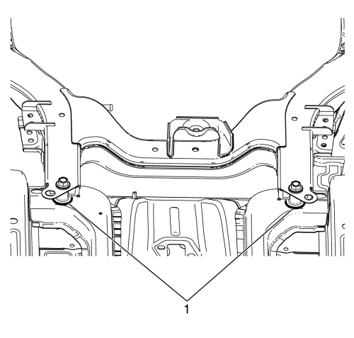
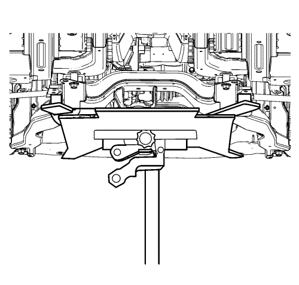
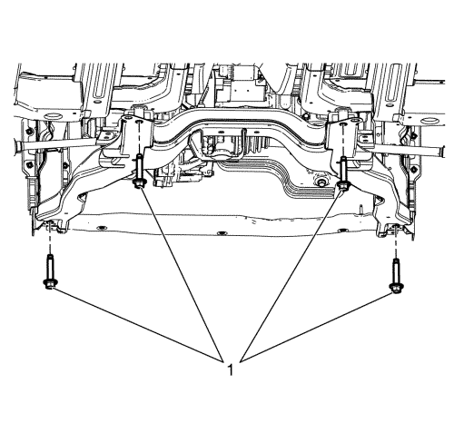

Sustitución del bastidor de la suspensión delantera y del tren de rodaje — con EN-49802
Herramientas especiales
EN-49802 Soporte de la base
Si desea informarse sobre herramientas regionales equivalentes, consulte Herramientas especiales
Procedimiento de desmontaje
- Elevar el vehículo y soportarlo de manera segura. Consultar Precauciones para elevación y soporte en alto del vehículo .
- Desmonte los conjuntos de rueda y neumático delantero. Consultar Desmontaje y montaje de la rueda y el neumático .
- Retire los dos protectores de salpicaduras del habitáculo frontal. Consultar Sustitución del protector de salpicaduras del habitáculo frontal .
- Desmonte la cubierta inferior delantera.
- Desmonte los revestimientos del paso de rueda de la parte delantera.
- Desmonte el panel del parachoques delantero. Consultar Sustitución del panel del parachoques delantero .
- Desmonte la protección inferior contra viento.

- Asegure el módulo de refrigeración a la derecha y a la izquierda de la estructura de la carrocería superior con un cable.
- Separe las dos rótulas del brazo de apoyo de las manguetas. Consultar Sustitución del brazo de apoyo inferior .
- Desmonte las dos tuercas de las varillas de la barra estabilizadora de la parte superior y separe del refuerzo las varillas derecha e izquierda de la barra estabilizadora. Consultar Sustitución de la varilla de la barra estabilizadora .
- Desmonte el tubo de escape. Consultar Sustitución del tubo de escape .

- Desmonte la tuerca y el perno (1) entre la barra de torsión y el soporte de montaje del cambio y tornillo (2) entre la barra de torsión y el bastidor.
- Desmonte la barra de torsión (3) del bastidor.

- Desmonte las tuercas de retención (1) del manguito/tubo de la dirección asistida y separe el tubo del bastidor. Consultar Sustitución del manguito/tubo de salida del mecanismo de la dirección asistida. .

- Extraiga los tornillos de retención (1) entre el conjunto del mecanismo de la dirección y el bastidor, y separe del bastidor el conjunto del mecanismo de la dirección. Consultar Sustitución del mecanismo de la dirección .

- Marque con un rotulador permanente los puntos de ubicación (1) del bastidor respecto a la carrocería.

- Monte el soporte de la base EN-49802 en un elevador hidráulico y sostenga el bastidor.

- Extraiga los pernos del bastidor a la carrocería (1).
- Baje el elevador lentamente y desmonte el bastidor del vehículo.
- Desmonte los siguientes componentes si va a sustituir el bastidor:
| 20.3. | Desmonte del bastidor los soportes del radiador. |
| 20.4. | Desmonte la barra de impactos inferior delantera. |
Procedimiento de montaje
- Si se ha desmontado el bastidor, instale los siguientes componentes:
| 1.1. | Monte la barra de impactos inferior delantera en el bastidor. |
| 1.2. | Monte los soportes del radiador en el bastidor. |
- Con el bastidor en el soporte de la base EN-49802 y un elevador hidráulico, suba el bastidor hasta el vehículo.
- Coloque manualmente todos los tornillos de retención entre el bastidor y la carrocería alineando el bastidor con las marcas de rotulador (1).
Atención: Consulte Precaución con las fijaciones en la sección Prólogo
- Apriete los tornillos de retención (1) entre el bastidor y la carrocería a 170 N·m (125 lib. pie).
- Baje el elevador y desmonte el soporte de la base EN-49802.
- Monte los tornillos de retención entre el conjunto del mecanismo de la dirección y el bastidor. Consultar Sustitución del mecanismo de la dirección .
- Monte el tubo de la dirección asistida en el bastidor y apriete las tuercas de retención del tubo. Consultar Sustitución del manguito/tubo de salida del mecanismo de la dirección asistida.
- Monte la barra de torsión (3) en el bastidor.
- Monte el tornillo (2) entre la barra de torsión y el bastidor y apriételo hasta 100 N·m (74 lib. pie).
- Monte la tuerca y el perno (1) entre la barra de torsión y el soporte de montaje del cambio y apriételos a 80 N·m (59 lib. pie).
- Monte el tubo de escape. Consultar Sustitución del tubo de escape .
- Conecte las dos varillas de la barra estabilizadora al refuerzo y apriete las tuercas de la varillas de la barra estabilizadora de la parte superior. Consultar Sustitución de la varilla de la barra estabilizadora .
- Monte las dos rótulas del brazo de apoyo en las manguetas. Consultar Sustitución del brazo de apoyo inferior .
- Retire el cable que asegura el módulo de refrigeración a la estructura de la carrocería superior.
- Monte la protección inferior contra viento.
- Monte el panel del parachoques delantero. Consultar Sustitución del panel del parachoques delantero .
- Monte los revestimientos del paso de rueda de la parte delantera.
- Monte la cubierta inferior delantera.
- Monte los dos protectores de salpicaduras del habitáculo frontal. Consultar Sustitución del protector de salpicaduras del habitáculo frontal .
- Monte los conjuntos de rueda y neumático delantero. Consultar Desmontaje y montaje de la rueda y el neumático .
- Bajar el vehículo.
- Realice una prueba del vehículo en carretera para comprobar si se dan las siguientes circunstancias:
| • | Vibración o ruido anormal del tren motriz al ralentí--Compruebe que el par y la alineación de los montajes del cambio y del motor sean correctos. |
| © Copyright Chevrolet Europe. All rights reserved |